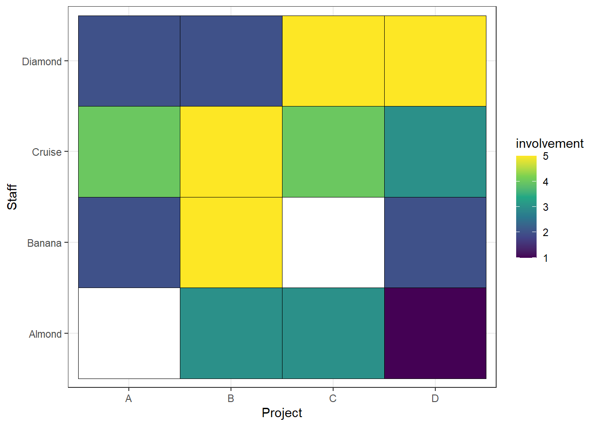

Employee Management Dashboard
Dashboard
Open Source
Creating a custom Management Dashboard from Open Source Tools
Introduction to the Problem
In a growing company, the management needs software to manage basic necessities of the company. This applies to nearly almost all departments so that things can run much smoother and faster whilst improving inter-communication between all personnel. However, in one of my previous company, the management wasn’t satisfied with having to subscribe to a number of softwares that operates in its own. With most of the big companies have move towards digital transformation, my company wanted to be the first within our sub-companies to adopt this inevitable trend.
With that, the idea of us creating our very own software from open source tools with addition of minor subscription from certain provider comes into life. I was tasked to lead this process and eventually deliver a fully automated system with minimal supervision required.
Tools Used
After weeks of interviewing relevant stakeholders while researching the optimum tools, I concluded that we require the tools below to complete the task.
How it worked
Firstly, the formspree is just a form-submitting platform for employees to submit their regular claims, OT, leave and etc. Once we ditch the papers from HR side and moved towards digitalization, our web developers even included details of the remainder of their leaves, historical leaves and OT and others. This already eliminate one of the problem for HR having to manually check for each staff for every details of their matters. Of course, this information can only be accessed by both HR and each particular staff. The data will then be automatically submitted to Google Sheets.
Next, the usage of JIRA is for the technical team and their respective team lead to submit their work entry. By right, this is mostly handled by the team leader to avoid creating too many side tasks for the technical team.
From there, using extensions from JIRA and Google Sheets API , we extract the data into our local server via cron-job on certain times of the day. From there, we started building the Dashboard via R Shiny . We created multiple segmentations to feed relevant stakeholders respectively.
Finally, our backend team deployed the dashboard through our servers so that it is secure and can’t be accessed from people outside the organization.
The dashboard was split into three section of functionalities.
- Management
For HR, Admin and Account to monitor leave, attendance, workload, and claims.
For HR to assess key area of expertise to recruit (via tree map of recent tasks)
For HR to compare employee current skills to suggest new courses for respective employees (via Radar Chart)
- Team Leader/ Head of Department
Work load
Rough work interaction for team leads to manage their team in terms of teamwork etc. (via Sankey Diagram)
Progress
- Employee
For employee to view concurrent tasks run by colleagues and historical task all in one page.
To quickly find who is most involved in a certain project for reference.
Sample Visualization
These visualizations are not the actual ones being done for my previous company.
- Project Involvement
For this purpose, I chose the heat map as its the use of suitable palette can quickly differentiate the value of ‘involvement’. Brighter colors indicate higher level of involvement thus what is left is for relevant stakeholders to define the method of calculating ‘involvement’
- Recruitment Needs
Given that we have collected enough sample data to understand the technical requirements needed in order to perform projects, we can just use simple statistic calculations to calculate the weight of each segment of work. The ‘weight’ meaning urgency to ensure current staff to expand their knowledge to relevant areas or to add more personnel in order to avoid bottlenecks. To perform this treemap, we organized the data in a ‘network’ format after a certain calculation towards the weights are produced.
Assuming the numbers are the so called ‘weights’, the colors indicate the urgency to have more resource in the specific area. What’s great about using treemap is the color and size can be used to emphasize on the magnitude of the urgency. For example, the smaller box in ‘R Language’ which is ‘Statistics’ are needed but have the least urgency. There’s a lot that can be played around here but what’s important is that the formula for the weights must take into consideration all necessary factors.
- Skill Set Coverage
Human Resource needs to suggest yearly courses for staff to enroll. At times, the staff are not sure themselves on what to take, hence having this tool for HR is handy for them to do research and provide suitable suggestions towards the staffs. Assuming the diagram below are 2 people in the same department but having different roles. For career progression, HR might feel that Staff B can start to engage more on clients, hence they suggest courses related to the topic in hand.
- Inter-communications
The team leader and HR feels that each member of the team should cooperate and work together organically. Their aim is to avoid groupings and isolations. Hence, the data from relevant projects can help produce this ‘Sankey’ visualization.
As we can see from the chart, Bernard and Emanuelle is quite isolated from the rest of their department, while only Daphne seems to be at the central of things, having about not only many, but bigger number of collaboration between her team members as demonstrated by the thickness of the grey lines. Here, the team lead can revisit on the why and hows and plan ahead for the future.
Challenges
The key challenge of this project was to get everyone on to the same page. Each and every person in the organization must be fully committed to this idea for it to work regardless of whether its a in-house built software or software purchased elsewhere.
Next, not everyone in the organization understands graph as quick as the technical people. From time to time, there will be a need to explain the findings of the charts from the dashboard.
Lastly, everyone in the organization must understand the basic fundamentals of each department’s tasks so that things within the dashboard will be easier to understand.
Remarks
I couldn’t have done this with the support of my team member especially the front and back end. As a team, we delivered as promise with minor hiccups along the way. There is a lot more that goes into data preparation that helps this project to work that i will not be sharing openly. This system was not without its flaws, as any other softwares and methodology, however it did manage to save the company money from subscribing to ‘silo-platforms’
Thank you for reading.